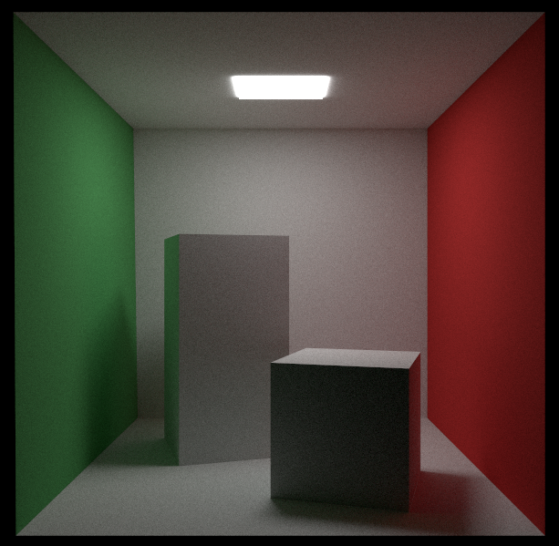

Using Vulkan API to create a path tracer
Table of Contents
About
In an effort to learn Vulkan, I attempted to develop a path tracing application, which simulates global illumination by tracing rays from a camera. The rays are terminated if they hit nothing or a light source, otherwise they bounce off surfaces until reaching a specified depth, effectively mimicking real-world light transport.
In this project the following features were implemented:
- Create window with GLFW
- Load .obj model using tinyobjloader
- Anti-aliasing by offsetting the origin of rays cast within a pixel region
- Raygen, Closest Hit and Miss shaders
- At present, only diffuse and light emitting materials have been added (I plan to add more materials soon)
I am using NVIDIA GeForce RTX 2050, for a 800 x 600 window it runs at ~70 FPS with 10 rays per pixel and a ray depth of 20. The application is also designed to stop ray tracing after 1000 frames for a static frame.
This is the result for Cornell Box after 1000 frames:
Installation
The code and instructions for installation are located on GitHub at https://github.com/clarlzx/PathTracer.